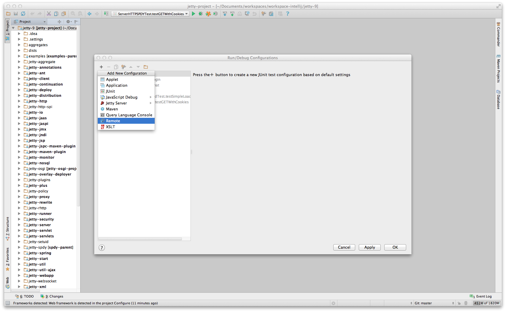
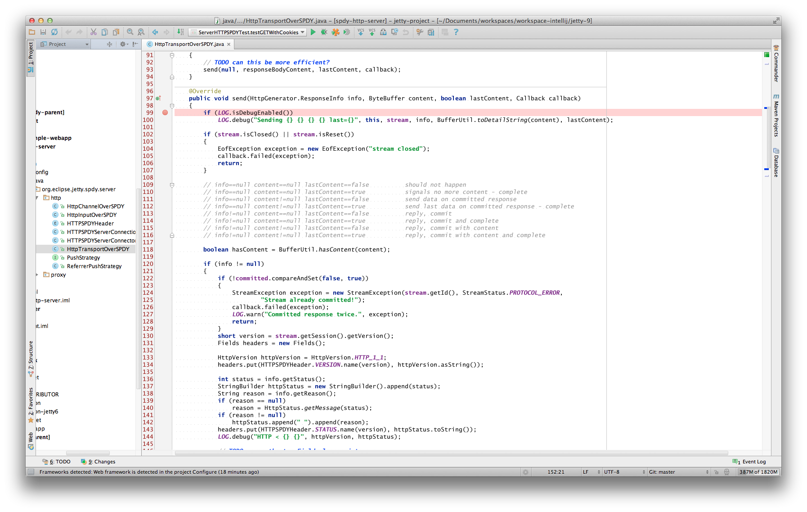
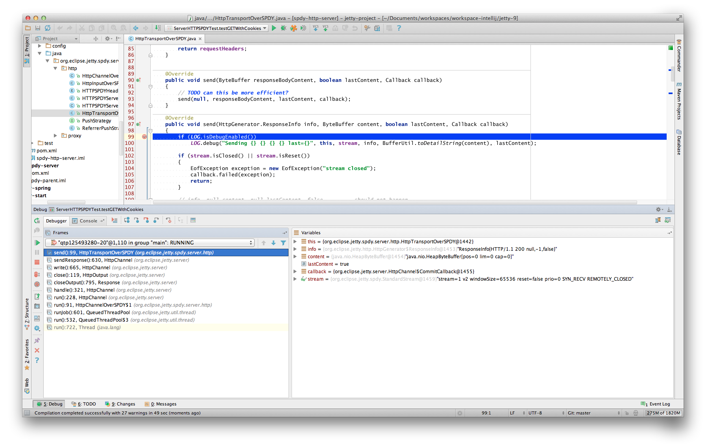
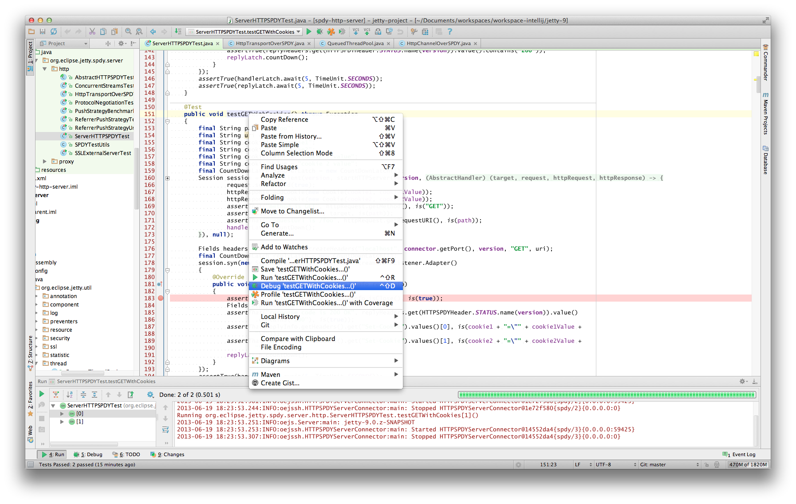

Version: 9.2.3.v20140905
Version: 9.2.3.v20140905 |
|
private support for your internal/customer projects ... custom extensions and distributions ... versioned snapshots for indefinite support ... scalability guidance for your apps and Ajax/Comet projects ... development services from 1 day to full product delivery
有大量的可用选项用于调试你的应用程序在 IntelljJ 中.
如果还没有准备好你的应用程序用于远程调试如这里所描述的:开启远程调试
接下来我们需要将被部署的 webapp 于 IntelliJ 项目链接.
在 IntelliJ 中,打开你想调试的部署到 jetty 中的 webapp 的项目.选择 Run -> Edit Configurations.通过点击 "+" 图标添加一个新的配置. 选择 Remote.保证你选择的端口和你在 开启远程调试 中的一样.
|  |
接下来在你的 webapp 你可以在 servlet 中设置一个断点,当它触发的时候,它将暂停远程 jvm 的处理线程从你的 IntelliJ 中等待调试命令. 为了设置一个断点,简单的打开你想调试的 servlet 或任意其它的类,然后点击你想设置断点的行的左边(下面截图中的红点).行中的红点和红色的背景标志着断点.
|  |
在你的浏览器中访问 servlet, 指向你的远程调试配置的 jetty-分发包,应该转换你的 IntelliJ 实例到标准的调试视图.
|  |
因为 Jetty 可以被很简单地嵌入,许多人选项创建一个 main 方法,你可以在 IntelliJ 中运行为了更容易地调试你的整个应用程序.
此种方式的最好的起点就是查看 嵌入式 Jetty 和 嵌入式示例.
一旦你有一个定义的 main 方法启动你的应用程序,打开源文件然后右击 main 方法.选择 Debug 或简单地使用 CTRL+SHIFT+D. 在你的 IntelliJ 中的 Console,你应该可以看到的你的应用程序启动,一旦它完成启动,你可以配置端点然后通过你的浏览器正常地使用你的 Jetty 实例. 相同的事情也适用于单元测试.取而代之的是在 test 方法上运行调试你想调试的主方法.
|  |
在 IntelliJ 中调试是非常强大的.比如可以有有条件的断点,如果配置的条件符合才会触发中断. 在互联网或 IntelliJ 文档 中查看各种教程了解更多的细节.
你可以通过 jetty-logging.properties 文件很容易地配置日志.
如果这个文件在你的 classpath 中,Jetty 将使用它用于配置日志,我们将在 Jetty 开发中广泛地使用这种方式,它使工作变得容易得多.
你可以在
jetty-logging.properties 文件 一节看下.